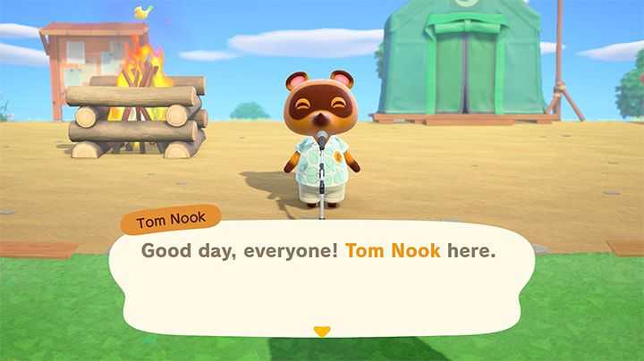
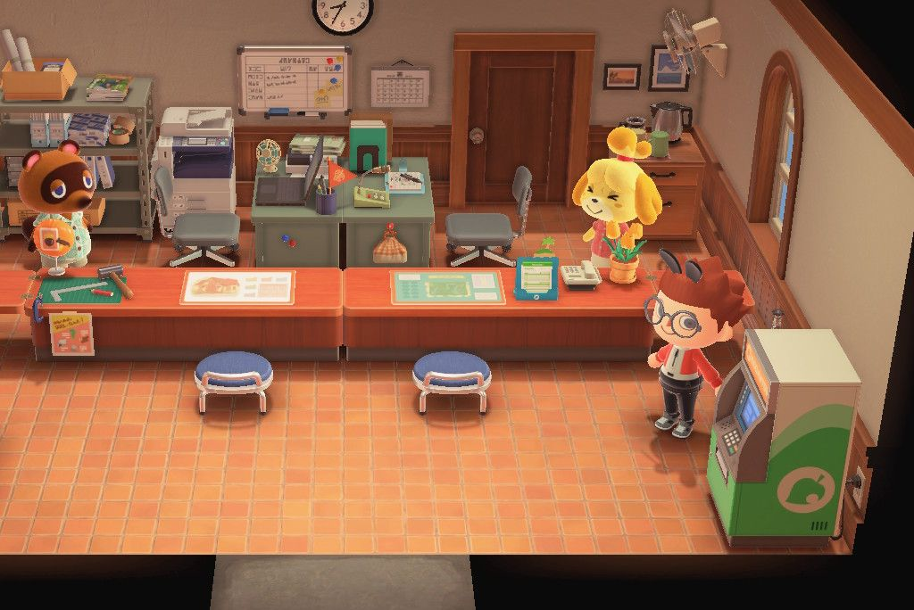
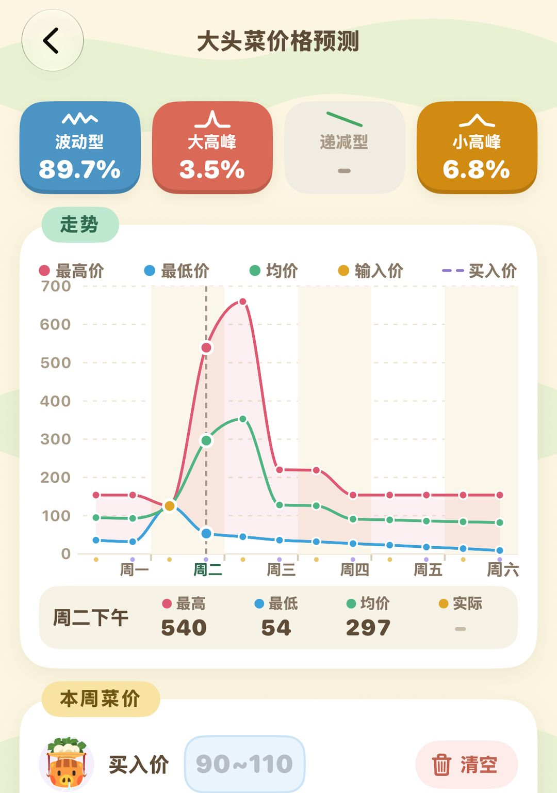

はじめての1週間：島に来たら何をする？
日数ごとに並べたメインの流れと、毎日ついでにやること、序盤のベル稼ぎ
あつ森は現実の時間と連動しているので、島の出来事の多くは「次の日まで待つ」必要があります。素材を納めてもお店が開くのは翌日、生き物を寄贈してもフータのテントが建つのは翌日。最初の数日は1日で全部終わらないのが普通なので、夜ふかしして無理に進めなくても大丈夫。下の順番どおりに、1日ずつ少しずつ進めていきましょう。
最初の1週間のメインの流れはだいたいこんな感じです。まずマイルでテント代を払い、フータを島に呼び、家を建ててお店を開き、新しい住民の住まいを用意して、最後に島の評価★3を目指します。★3が最初の大きな目標で、達成するととたけけがライブをしに来てくれて、地形を変えられる「島クリエイター」も手に入ります。とはいえ1週目で★3まで行ける人は少なく、ふつうは2〜3週間かかるので、あせらなくて大丈夫です。
011日目：テントを張って、マイルを貯める
島に着いたら、まずテントを張る場所を選びます。そのあと、たぬきちについて島で木の枝を拾ったりフルーツをとったりしながら操作に慣れていきましょう。夜になるとみんなでキャンプファイアを囲んでパーティーが開かれ、ここで島の名前を決めます。

1日目の夜のキャンプファイア。たぬきちがみんなにあいさつ（英語版の画面）（画像：任天堂）
パーティーが終わると、たぬきちがマイルとDIYについて説明してくれます。テント代は5,000マイルで、ベルでは払えません。スマホの「たぬきマイレージ＋」を開くと、釣りや虫とり、木をゆする、ものを作るといった小さな目標が並んでいて、1つ達成すると新しいものが出てきます。島をひと回りするだけでもかなり貯まるので、5,000マイルはすぐです。
案内所のテントでは「ショボいつりざお」と「ショボいあみ」がもらえます。釣った魚やつかまえた虫はすぐに売らず、たぬきちに見せに行きましょう。ちがう生き物を5種類そろえると博物館のフータが島に来ることを決めてくれて、翌日には彼のテントが建ちます。1日目にいろいろな魚や虫をとっておくと、博物館の進み具合を前倒しできます。
ヒントものは一度に最大10個まで作れます。自分の家のこうさくだいでDIYするときは、収納の中の素材をそのまま使えるので、いちいちポケットに出さなくてもOKです。
022〜3日目：博物館、お店、マイホーム
フータのテント
フータのテントが建ったら、魚や虫を寄贈できるようになります。地面から掘り出したかせきはまず鑑定してもらい、博物館にないものは寄贈、ダブったものは売ってベルにしましょう。この時期にスコップとたかとびぼうの作り方も覚えていきます。たかとびぼうがあれば川を飛び越えて、向こう岸にも行けます。さらに寄贈が15点そろうと、博物館が立派な建物になります。
テント代を払い終えたら
マイルでの支払いが終わると、たぬきちが家を建てようと提案してくれます。今度はベルで、ローンは98,000ベル。催促も利息もなく、家は翌日に完成するので、のんびり返していけば大丈夫です。
まめきちからもお店を開く手伝いを頼まれます。必要なのはもくざい・やわらかいもくざい・かたいもくざい・てっこうせきを各30個。もくざいはオノで木をたたいて集めます。1本の木から1日3個とれるので、何本か回ってたたきましょう。てっこうせきは岩をたたくと出てきます。一度に全部そろえなくてもよく、1種類たまったら先に渡してOK。4種類すべて渡すと翌日お店がオープンし、営業時間は8時〜22時です。
034〜7日目：住民を迎えて、橋をかけて、★3へ
このあたりからは、毎日どれくらい遊ぶかで進み方が変わります。おおむね次の順に進めていきましょう。
1. 新しい住民3人の家を用意する。たぬきちから新住民の家を建てる場所を選ぶよう頼まれ、それぞれの区画に指定された家具をいくつか置く必要があります。この間に最初の橋をかける依頼があり、はしごの作り方も教わります。はしごがあれば高台に登れます。
2. 案内所の建て替え。3人の住民が全員引っ越してくると、案内所のテントが立派な建物に建て替わり、しずえも働きに来てくれます。島の評価はしずえに聞けばわかります。
3. キャンプサイト。たぬきちからキャンプサイトの場所を選ぶよう頼まれます。完成するとときどきお客さんがキャンプしに来て、話がはずめば島に引っ越してもらえるよう誘えます。
4. 仕立て屋。きぬよがときどき広場にお店を出しに来ます。博物館・お店・案内所がそろったうえで、彼女の露店で2回に分けて買い物をしておくと、3回目に来たときに島でお店を開くことを決めてくれます。

建て替えた案内所。たぬきちとしずえはここにいます
ここまで終わったら、次は島の評価★3を目指します。何が足りないかはしずえが教えてくれます。たいていは花や木、外に置いた家具が足りないので、足りないものを足していきましょう。★3になるととたけけがライブに来てくれて、そのあと地形を変えられる「島クリエイター」が手に入ります。
注意島の評価には木や花が関わってきます。序盤にあちこち木を切ったり、地面を掘り返したりするのはやめて、よく考えてから手をつけましょう。
04毎日ついでにやること
メインの流れとは別に、島では毎日いろいろなものが新しく出てきます。ついでに拾っておくだけで、素材もベルもぐっと貯まりやすくなります。
地面に星形のヒビがある場所にはかせきが埋まっています。毎日4個出るので、掘り出したらフータに鑑定してもらいましょう。
島の岩は毎日たたくと素材が出てきて、そのうち1つはベルが出る岩です。たたく前に自分の後ろに穴を2つ掘っておくと、はじかれずに8回続けてたたけます。
砂浜には毎日メッセージボトルが1本流れ着きます。中にはDIYレシピが入っているので、海岸沿いをひと回りして拾いましょう。
こまめに住民と話すと少しずつ仲よくなり、ときどきプレゼントももらえます。家でDIYに熱中している住民に会えたら、新しいレシピも教えてもらえます。
お店の品ぞろえは毎日ちがいます。見たことのない家具はとりあえず買っておきましょう。見逃すと次にいつ並ぶかわかりません。
こうした毎日あるものほど、かえって忘れがちです。あつ森 サークルには毎日のチェックリストがあり、終わったものから1つずつチェックできます。毎日の流れをまとめたものは『毎日これだけやればOK』を見てください。

あつ森 サークルの毎日のチェックリスト。住民との会話やプレゼントも1人ずつチェックできます
05序盤のベルの稼ぎ方
ローンの返済にも増築にもベルが必要です。序盤のおもな稼ぎ方は次のとおり。
いちばん手軽なのはフルーツを売ること。島の特産フルーツは1個100ベルですが、ほかの島のフルーツは500ベルで売れます。離島や友だちの島から何個か持ち帰って植えれば、育ったあとはまさに「お金のなる木」です。
次はカブ。日曜の午前中にウリが島にカブを売りに来て、月曜から土曜はお店が毎日午前・午後に1回ずつ買い取ってくれます。買取価格はどんどん変わるので、高いときをねらって売りましょう。カブは次の日曜日に腐ってしまうので、必ずそれまでに売り切りましょう。
ふだんの釣りや虫とりの獲物もベルになります。慣れてきたら、夜に出るタランチュラやサソリ、雨の日のシーラカンスをねらってみましょう。どれも高く売れます。
使わないベルはATMに預けておきましょう。案内所のATMは毎月少し利息がつくので、ポケットに入れておくよりお得です。
いつ売ればいいか迷ったら、毎日見た値段をあつ森 サークルのかぶ価格予測に入力してみてください。その週のだいたいの値動きを予測してくれます。

かぶ価格予測：買値と毎日見た値段を入れると、その週の値動きを予測します
ヒントテント代を払い終えても、マイルを一気に使い切らないように。案内所のタヌポートで2,000マイルを「マイルりょこうけん」に交換すれば、離島に飛んでタケを切ったり、フルーツを持ち帰ったり、素材を集めたりできます。運がよければ、誘いたい住民に会えることも。
ヒントショボい道具はしばらく使うと壊れます。素材に余裕があれば一度に10本作ってストックしておき、もっと丈夫な道具のレシピを覚えたら持ち替えましょう。
06アップデートでの変更点
一度に10個作れるのも、家で収納の素材を使ってそのままDIYできるのも、Ver.3.0で追加された機能です。先にゲームをVer.3.0にアップデートしておきましょう。
あつ森 サークル · App Store で「あつ森 サークル」を検索